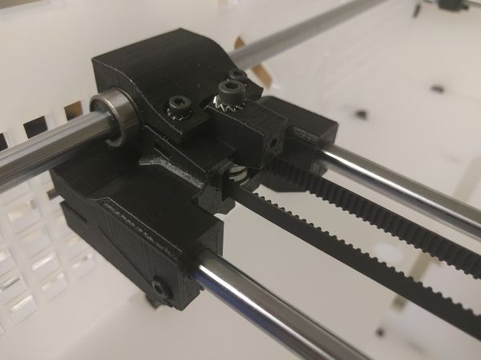

Rebuilt page · source: wiki.e3d-online.com/wiki/Dual_Direct-Drive_X-Carriage · archive link (parent page)
Recovered from an older version of Printer main assemblies: Step By Step Assembly Process (20160729070751), section "(7) Dual Direct-Drive X-Carriage" — the separate wiki page is not in the archive.
Position the previously prepared Dual X-Carriage onto the bearings.
The 'legs' which mount the IR Sensor and Print Fan should be on the back and left respectively as you look at your printer.
Secure the X-Carriage to the bearings using the two Bearing Clamps.
Fit the M3 Square Nut into the Belt Tensioner and thread in the M3 Screw.
Place the Tensioner into the X-Carriage.
Slot one end of the belt into the X-Carriage as shown. Note: Check the orientation of the belt teeth matches the groves in the X-Carriage.

Feed the belt throuh the X-Idler.
Pass the belt around the 20T GT2 Pulley on the X-Axis Motor and return it towards the X-Carriage.
Screw in the grub as shown.
Do not over-tighten.
Pull the belt taught and cut to length, fix the belt end into the X-Carriage.
Secure using the Grub Screw.
Do not over-tighten.